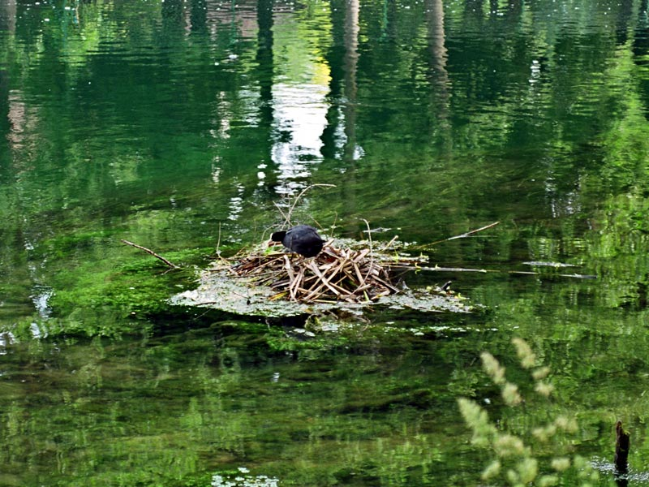
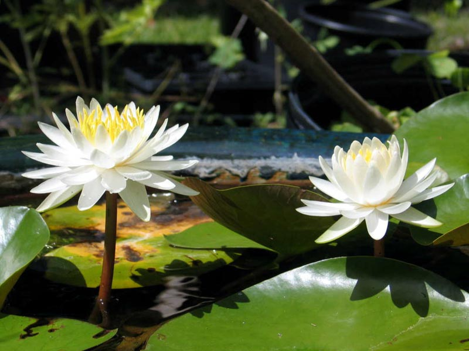
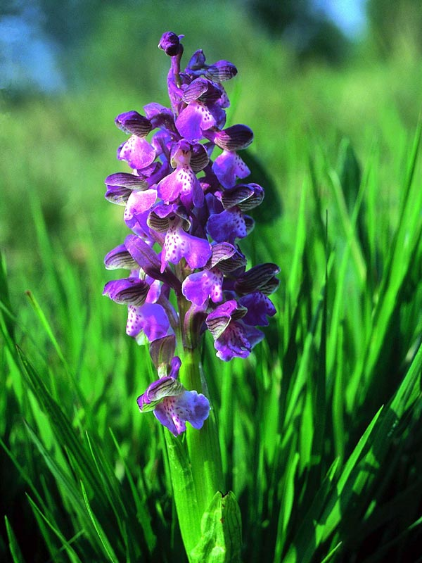
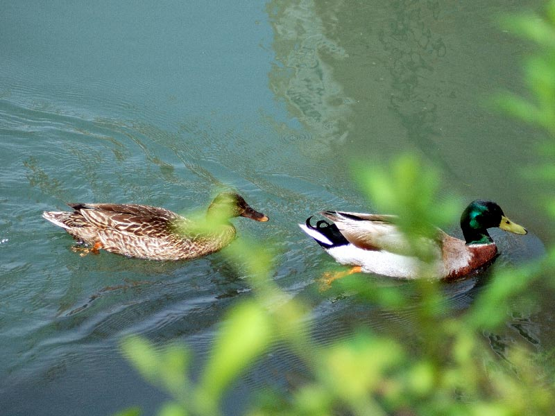
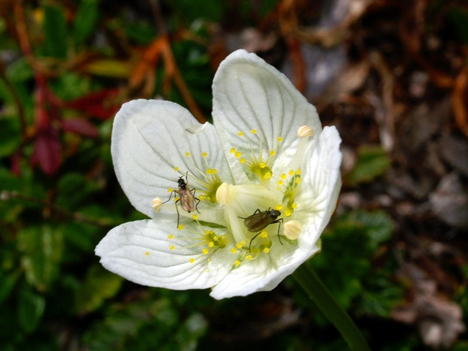

L'area del parco
L'area del Parco, nonostante la presenza umana, mantiene ancora un discreto livello di naturalità grazie alla presenza lungo il corso del Sile di boschi
idrofilo e di una diffusa presenza di polle risorgive. Notevole valore assumono anche i grandi bacini d'acqua creati negli anni '50 dall'escavazione in alveo.
Tra questi si citano i due bacini denominati Lago Inferiore a Lago Superiore a Quinto di Treviso e quelli posti al confine tra i comuni di Treviso,
Silea e Casier.
In tutti questi ambienti nei vari mesi dell'anno si possono effettuare una serie di osservazioni molto interessanti.
Il periodo migliore è costituito dai mesi primaverili ed estivi quando la vegetazione presenta il massimo del suo sviluppo.
Anche durante l'inverno però si osservano importanti specie di uccelli che, migrando dal nord Europa, sostano in questi lembi tutelati di Parco.
Visualizza maggiori informazione sulla flora e sulla fauna in tutta Italia.
Primavera
In primavera l'Oasi di Cervara si copre di un manto vegetale costituito soprattutto da Pioppi, Salici ed Ontani all'interno dei quali si osservano molte specie animali. Tra queste merita ricordare per la sua abbondanza la Rana di lataste, specie endemica della Pianura Padana. Tra gli uccelli invece, i più vistosi sono il Picchio verde ed il Picchio rosso maggiore che nidificano dopo aver costruito i tipici fori nel tronco degli alberi. Una miriade di Passeriformi inoltre frequenta l'area nel periodo delle migrazioni, tra questi i più comuni sono il Luì piccolo, il Luì verde, la Balia nera, il Pigliamosche e molti altri di facile osservazione con l'aiuto del binocolo. Il maggiore contributo alla naturalità dell'area viene portato dalla colonia di aironi (airone cenerino, garzetta e nitticora) che fin dalla istituzione del Parco, attira l'interesse di molti ornitologi e birdwatchers. Alle prime specie, ultimamente si è aggiunto l'airone guardabuoi che sta diffondendosi sempre di più anche in Veneto. Nel periodo primaverile si osservano anche alcune piante del sottobosco particolarmente degne di nota, tra queste la felce Thelypteris palustris, tipica dei sottoboschi umidi, un tempo frequente nei boschi planiziali padani.
Estate
Nel periodo primaverile-estivo è possibile osservare la nidificazione della Folaga, del Tuffetto, della Gallinella d'acqua e del più raro e maestoso Svasso maggiore. Tutte specie nidificanti lungo le rive ed attorno i bacini più ampi del fiume. Tra gli uccelli nidificanti spicca per importanza la nidificazione della Moretta, un'anatra tuffatrice molto rara come nidificante in Italia. Volgendo lo sguardo lungo le rive del fiume, si possono rilevare assembramenti di Cavedani nonché Tinche e Carpe occupate a svolgere i rituali tipici della riproduzione. Tutto attorno si assiste alla crescita dell'Hippuris vulgaris, una pianta un tempo molto diffusa lungo il Sile ed ora in via di riduzione a causa forse della modificazione dello stato delle acque. Molto gradevoli e delicati sono anche le infiorescenze del Morso di Rana (Hydrocharis morsus-ranae) che si sviluppano nelle acque basse e si mescolano alle foglioline dalla Lemna minor che cresce in abbondanza.
Autunno-Inverno
Nei mesi autunnali ed invernali si assiste al fenomeno delle migrazioni degli uccelli ed in particolare di quelli acquatici che sostano nelle aree più aperte ed ampie del fiume. In questo periodo si osservano Cormorani, Svassi maggiori, Tuffetti ed Anatre come Germano reale, Moriglione, Moretta, Moretta tabaccata, Canapiglia, Alzavola etc. ed una miriade di Gabbiani tra cui il Gabbiano reale e quello comune che fanno sempre da padroni. Non mancano però anche i gabbiani nordici come la Gavina e talvolta perfino lo Zafferano che temporaneamente sostano nell'area. In certi anni le sponde del Lago si ricoprono di un manto vegetale di color marrone-rossiccio, è l'Azolla filiculoides, una piccola felce acquatica che svolge un fondamentale ruolo nella fitodepurazione delle acque. Si tratta in definitiva di una moltitudine di specie animali e vegetali, che esaltano il grado di naturalità e di biodiversità del Parco e permettono ancora una volta di godere delle bellezze racchiuse lungo il corso del fiume Sile.